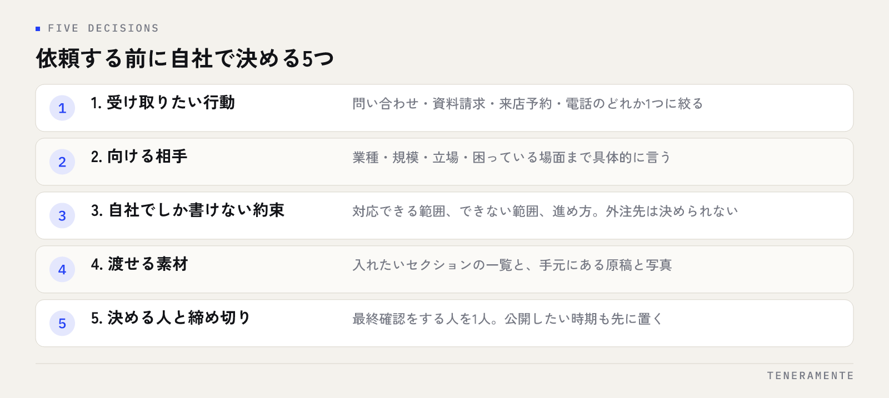

ランディングページ（Landing Page、LP）の制作を外注するとき、複数社の見積もりを並べても判断できないことがあります。結論から申し上げると、LP制作の費用は金額の大小ではなく、どこまでを相手に任せる見積もりなのかで読み分けます。同じ1ページでも、原稿を自社で用意するのか相手に書いてもらうのかで、見積もりの中身はまったく別のものになります。この記事では、LP制作の費用の内訳を項目ごとにほどいて、依頼前に決めておくことまでを順番に整理します。
📌 この記事の結論
見積もりを比べるときに見るのは総額ではなく、自社の作業として残るものがどれだけあるかです。原稿・写真・公開後の修正。この3つが見積もりに入っていないと、安く見えた見積もりのほうが社内の時間を多く使います。項目の名前が書かれていない「一式」は、比較の対象になりません。
01LP制作の費用は、何に払っているのかで3つに分かれる
LP制作費という1行は、中身をほどくと性質の違う3つの費用が入っています。この3つを分けるだけで、見積もりの読み方が変わります。
一つ目は、考える費用です。誰に向けたページなのか、何を約束するのか、どの順番で読ませるのか。構成と訴求を決める作業で、見積もり上は「設計」「構成案」「ワイヤーフレーム」といった名前で現れます。
二つ目は、作る費用です。原稿の執筆、デザイン、画像の加工、コードへの実装、フォームの設置、表示の調整。手が動く部分で、金額の多くはここに乗ります。
三つ目は、出したあとの費用です。公開後の文章の差し替え、見出しの入れ替え、計測の設定、サーバーとドメインの維持。公開して終わりではなく、反応を見て直す前提のページであれば、ここを抜いた見積もりは実態と合いません。
見積もりを受け取ったら、まずこの3つのどこに金額が置かれているかを確かめるのが出発点です。作る費用だけで構成されている見積もりは、考える部分と直す部分が自社の仕事として残ります。ホームページ全体の費用の考え方はホームページ制作費用の内訳にまとめています。
02見積もり項目を分解する：設計・原稿・デザイン・実装・公開
見積もりの書き方は会社によって幅がありますが、作業そのものは共通しています。提案書と見比べるために、項目ごとに何の作業なのかと、確かめるべき点を並べます。
| 見積もり項目 | 実際に行われる作業 | 確かめること |
|---|---|---|
| 要件整理・ヒアリング | 目的・読者・訴求・問い合わせの定義を決める | 打ち合わせは何回か。誰が同席するか |
| 構成設計 | 見出しの並び、読ませる順番、要素の配置を決める | 構成案は文字で出るか。修正は何回まで含むか |
| 原稿執筆 | 見出しと本文、キャッチコピーを書く | 自社提供か、相手が書くか。取材は含むか |
| デザイン | 配色・書体・余白・図の設計と画面の作成 | スマートフォン用の設計は含むか |
| 写真・素材 | 撮影、画像の加工、図版やアイコンの作成 | 撮影は別か。有料素材の費用は誰が持つか |
| 実装 | コードへの反映、表示速度と文字の折り返しの調整 | 対応ブラウザの範囲。表示崩れの確認方法 |
| フォーム | 問い合わせ項目の設計、送信と通知の仕組み | 自動返信は含むか。項目の追加は都度か |
| 計測の設置 | 流入と問い合わせ数を数える設定 | 何を計測するか。見方の説明はあるか |
| 公開作業 | サーバーへの設置、ドメインの設定、動作確認 | サーバー費用は見積もりに含むか |
| 公開後の修正 | 文章や画像の差し替え、見出しの入れ替え | 期間と回数。範囲はどこまでか |
このうち見積もりの差が最も出るのは、原稿執筆と写真・素材の2つです。原稿を自社で用意する前提の見積もりは、総額が小さくなります。安いのではなく、書く作業が自社に残っているだけです。ここを混ぜたまま総額を比べると、判断を誤ります。
03費用が大きく動く4つの変数
同じ「LP1ページ」でも、金額は条件で動きます。動かしているのは主に次の4つです。
一つ目は、ページの長さと要素の数です。説明する内容が多いページは、構成・原稿・デザイン・実装のすべてが増えます。見積もりを依頼する段階で、入れたいセクションを数えて伝えると、見積もりの精度が上がります。
二つ目は、原稿と写真の有無です。文章と写真が自社にそろっているか、取材と撮影から始めるかで作業量が変わります。手元の素材を先に見せるだけで、見積もりの前提がそろいます。
三つ目は、動きと作り込みの量です。スクロールに合わせた演出、図のアニメーション、診断のような仕掛け。見た目に近い部分ほど、工数の見方が会社ごとに分かれます。
四つ目は、公開後の運用をどこまで含めるかです。数値を見て文章を入れ替える前提なのか、作って納品で終わるのか。同じ金額でも、含まれる期間が違えば比較になりません。
見積もり依頼のときに添えるもの
入れたいセクションの一覧、手元にある原稿と写真、問い合わせで受け取りたい項目、公開したい時期。この4つを最初に渡すと、各社の見積もりが同じ前提で並びます。口頭ではなく、短い文書にして同じものを各社へ渡すほうが確実です。
04「一式」としか書かれていない見積もりの読み方
LP制作費一式、という1行だけの見積もりが届くことがあります。金額が妥当かどうかは、この状態では判断できません。
このときに聞くのは値引きではなく、内訳です。前の章の表の項目を挙げて、含まれているかどうかを一つずつ確認してください。「原稿はどちらが書きますか」「スマートフォン用のデザインは含まれますか」「公開後の文章の差し替えは何回まで含まれますか」。この3つだけでも、見積もりの性格が分かります。
確認した答えは、見積もりか議事録に書き足してもらいます。口頭の了解は担当者が変わると残りません。書かれていない作業は、含まれていないものとして扱うのが安全です。
逆に、内訳を聞いたときに作業の名前と回数がすぐ出てくる相手は、工程が整理されている相手でもあります。見積もりの細かさは、進め方の細かさとおおむね一致します。
05依頼前に自社で決めておくこと
見積もりの精度と、公開までの速さを決めるのは、依頼前に自社で決めた項目です。ここが空のまま依頼すると、打ち合わせの回数が増え、原稿の往復で時間が流れます。

まず、このLPで受け取りたい行動を1つに決めてください。問い合わせか、資料請求か、来店予約か、電話か。複数並べたページは、どれも弱くなります。次に、誰に向けるかを決めます。業種・規模・立場・困っている場面まで具体的に言えると、原稿の方向が1回で決まります。
そのうえで、約束できることを書き出します。対応できる範囲、できない範囲、他社との違い、進め方。ここは外注先が代わりに決められない部分です。自社でしか書けない中身を先に用意しておくと、原稿の往復が短くなります。
最後に、社内の決める人と締め切りを決めます。確認者が増えるほど、修正の回数と期間は伸びます。問い合わせが増えないLPの原因は、ホームページから問い合わせが来ない理由でも触れています。
06公開後にかかる費用まで含めて比べる
LPは公開してから直すページです。費用を比べるときは、公開までの金額だけでなく、公開後に発生するものまで並べてください。
残るのは主に4つです。サーバーとドメインの維持、広告を出す場合の広告費、文章や画像の差し替え、計測した数値の確認。このうち差し替えは頻度で扱いが変わります。月に数回直す前提なら自社で直せる形にしておくほうが早く、年に数回なら都度依頼で足ります。
ここで確かめたいのは、自社で文章を直せる形で納品されるかどうかです。管理画面から直せるのか、依頼しないと直せないのか。この違いは、公開後の支出と反応の速さの両方に効いてきます。
広告を出す前提のLPなら、広告費と制作費は最初から分けて考えてください。制作に寄せすぎて広告費が残らない形は避けたいところです。保守の費用の読み方はホームページの保守・管理費の内訳にまとめています。
07見積もりを比べるチェックリストと、よくある失敗
複数社の見積もりを並べるとき、次の項目を同じ順番で確かめてください。1社だけに聞くのではなく、全社に同じ質問をすると差が見えます。
- 原稿は誰が書くか。取材は何回あるか
- 写真と図版は誰が用意するか。撮影と有料素材の費用は含まれるか
- スマートフォン用のデザインと表示確認は含まれるか
- 構成案は文字で出るか。修正は何回まで含まれるか
- デザインの修正は何回まで含まれるか。超えた場合の扱いはどうなるか
- 問い合わせフォームの項目と自動返信は含まれるか
- 計測の設置は含まれるか。何を数えるか
- 公開後の修正は、どの期間に何回まで含まれるか
- 文章を自社で直せる形か。管理画面はあるか
- サーバーとドメインは誰の名義になるか
- 公開までの日程と、確認のタイミング。制作したデータは自社に残るか
よくある失敗は、次の5つです。
総額だけで選ぶ。原稿と写真が含まれていない見積もりは安く出ます。含まれる作業をそろえてから比べてください。
原稿を外注先に任せきりにする。自社でしか書けない中身が空のままだと、どこかで見たようなページになります。
確認者を決めずに進める。公開直前に別の人の意見が入ると、構成から戻ります。決める人は最初に1人決めてください。
計測を入れずに公開する。数えていなければ、直す場所を判断できません。問い合わせ数と流入元は最初から数えてください。
公開後の修正を見積もりに入れない。LPは出してから直すページです。直す前提のない見積もりは、公開後に別の相談が必要になります。
08自分で進める場合と、専門家に任せる場合の分かれ目
一般論として、判断の基準は3つあります。
一つ目は、原稿を書ける人が社内に居るかどうかです。LPの出来は、見た目よりも文章で決まる部分が大きいところがあります。扱う商品やサービスを言葉にできる人が社内に居るなら、原稿を自社で持ち、設計と実装だけを任せる形が速くなります。言葉にする段階で止まるなら、取材から任せたほうが結果的に早く公開できます。
二つ目は、公開後に直し続ける体制があるかどうかです。LPは一度作って終わりではなく、反応を見て見出しや順番を入れ替えていくページです。数値を見る担当者と、直す手が社内にあるなら自社で回せます。どちらも兼務で手が回らないなら、運用まで含めて任せる前提で選ぶほうが現実的です。
三つ目は、そのLPが売上にどれだけ直結するかです。広告を出して集客の中心にするページなら、設計と原稿に専門の手を入れる価値があります。用途が限られるページなら、社内で作って公開し、反応を見てから手を入れる判断もあり得ます。
迷うときは、公開後3か月でこのページに何回手を入れる予定があるかを考えてみてください。何度も直す前提なら、直せる形と相談できる相手を確保しておく。1回作って置いておくだけなら、作る部分だけを依頼する。この見方で、過不足のない依頼の形に近づきます。
09よくある質問
LPは1ページなのに、なぜホームページと同じくらいの見積もりになることがあるのですか？
原稿は自分たちで書いたほうが安く済みますか？
見積もりに含まれる「修正2回まで」とは、どの範囲ですか？
公開後に文章を自分たちで直せるようにするには、何を頼めばよいですか？
相見積もりを取るときのマナーで気をつけることはありますか？
10まとめ：内訳がそろえば、LPの見積もりは比べられる
LP制作の費用を読むときの順番は決まっています。費用を考える・作る・出したあとの3つに分ける。見積もりの項目を作業の名前まで分解する。原稿と写真を誰が用意するかをそろえてから総額を比べる。「一式」の内訳を聞いて、答えを文字に残す。依頼前に、受け取りたい行動・向ける相手・約束できること・決める人を決める。公開後の修正と、自社で直せる形かどうかを確かめる。ここまでやれば、自社に必要な範囲で選べます。
逆に、総額だけを並べて安いほうを選ぶと、原稿も写真も公開後の修正も自社に残ったまま、手が止まったページができます。LPの費用は、作る手間に払うというより、決める作業と直し続ける仕組みに払うものです。
TENERAMENTEなら、この記事で挙げた「原稿が書けずに止まる」「公開後に直せない」という2つの詰まりを、進め方の側で外します。制作は3回のミーティングで要件・構成・原稿の方向を決めていく形を取っており、自社でしか書けない材料を箇条書きで出していただければ、文章として整える部分はこちらで引き受けます。納品は自社CMS「ミルページ」で行うため、公開後の見出しや文章の差し替え、写真の入れ替えは管理画面からその日のうちに反映できます。見出しを1行変えるたびに依頼して反映を待つ時間がなくなり、反応を見ながら手を入れ続けられる形になります。制作と運用の範囲はHP/LP作成にまとめています。初回のご相談60分は無料ですので、受け取った見積もりの読み方で迷っている段階でも、お問い合わせからお気軽にご相談ください。